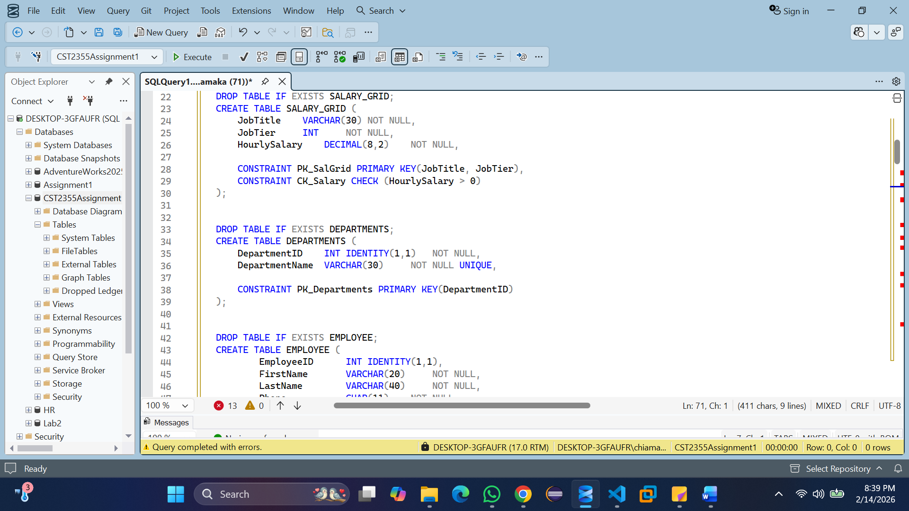
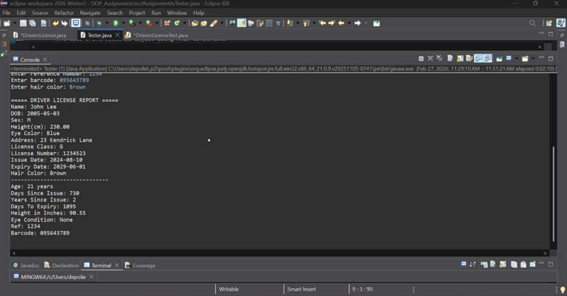
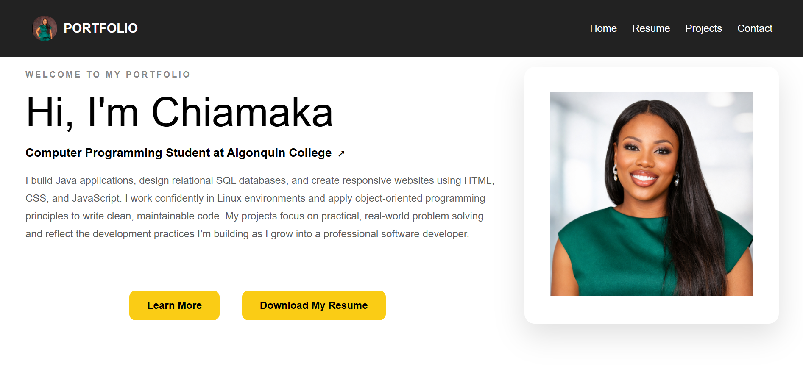
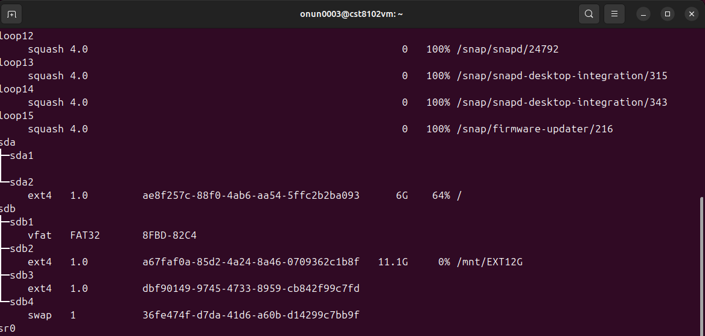

Designed and implemented a relational payroll database using Microsoft SQL Server to manage employee records, salary structures, tax deductions,and payment history. Collaborated with team members to create normalized tables, define relationships, enforce constraints, and ensure accurate payroll calculations and reporting.
Date: Febuary 2026
Technologies:Microsoft SQL Server, T-SQL, Stored Procedures, Views, Indexes, Data Normalization

Developed a Java-based Drivers License Management System using object-oriented programming principles to model driver license information. Implemented constructors and methods to calculate license expiry and display license details.Tested application functionality using JUnit and created UML diagrams and Javadoc documentation to support system design and code clarity.
Date: Febuary 2026
Technologies:Java, OOP, JUnit, UML, Javadoc, Eclipse

Designed and developed a personal portfolio website to present my background, technical skills, resume, and academic projects in a professional format. Built multiple linked pages with a consistent navigation bar, responsive layout, styled components, and interactive elements using JavaScript.
Date: March 2026
Technologies: HTML, CSS, JavaScript, Responsive Design, Form Validation

Configured and managed disk partitions in a Linux environment as part of an academic Linux practical exercise.. Created a partition table, formatted partitions with filesystems, and mounted them using command-line utilities. This project demonstrated practical experience with Linux storage management and system configuration.
Date: Febuary 2026
Technologies: Linux, fdisk, mkfs, mount, lsblk, Command Line
